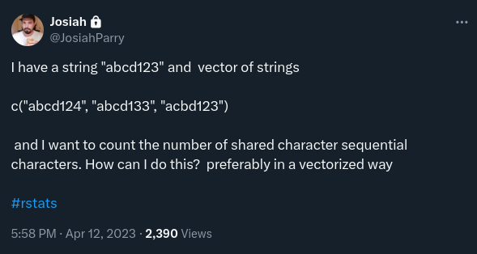
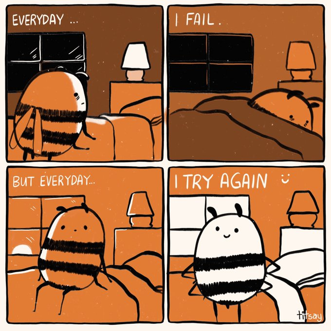

csc <- \(char_vec, str) {
patterns <- nchar(str) |>
seq_len() |>
sapply(\(i) substr(x = str, start = 1, stop = i)) |>
sprintf(fmt = "^%s")
count <- rep(0, times = length(char_vec))
for (pattern in patterns) {
count <- count + grepl(pattern = pattern, x = char_vec)
}
count
}There is this problem Josiah posted on twitter in April 12 2023:

Since then, it has lingered in a corner of my mind. It is such a simple problem, and yet for a long time I couldn’t figure out how to solve it efficiently in R.
Reprex
A reprex is always a good starting point. Basically a practical explanation of what you want to achieve.
We want to create a function count_sequential_chars() such that:
string <- "abcd123"
x <- c("abcd124", "abcd133", "acbd123")
count_sequential_chars(char_vec = x, string = string)
# [1] 6 5 1count_sequential_chars(char_vec = x, string = "ab")
# [1] 2 2 1count_sequential_chars(char_vec = x, string = "ac")
# [1] 1 1 2count_sequential_chars(char_vec = x, string = "123")
# [1] 0 0 0Main thing to note:
- Matching is always done from left to right. ie. from the beginning of the reference string to its end.
Algorithm
Thinking about the problem and writing a “solution” in layman terms helps a lot. Let’s use the variables we’ve defined in the reprex above:
stringis the reference stringxis the character vector we’re comparing against
Get all patterns that we need to match. Take characters of the reference string and concatenate them from left to right, adding one at a time. Using
string, we end up with these patterns:- “a”
- “ab”
- “abc”
- “abcd”
- “abcd1”
- “abcd12”
- “abcd123”
Now for each pattern, check whether a given item in
xstarts with that pattern. If so, give the pattern a weight of 1. Otherwise, 0. Taking the first item ofx(“abcd124”) as reference, we have this:Pattern Weighting pattern weight “a” 1 “ab” 1 “abc” 1 “abcd” 1 “abcd1” 1 “abcd12” 1 “abcd123” 0 The number of shared sequential characters between
stringand the item is the sum of the weights. Again, taking the first item ofx(“abcd124”), the sum of the weights is 6.Repeat steps 1 to 3 for all items of
x.
First attempt
My first attempt was in Dec 8 2023:
csc for count_sequential_characters, btw.
This solution works fine:
string <- "abcd123"
x <- c("abcd124", "abcd133", "acbd123")
csc(char_vec = x, str = string)[1] 6 5 1but… it’s too slow:
sample_strings <- replicate(
n = 1e6,
expr = paste0(
paste0(letters[1:5] |> sample(size = 4) |> sort(), collapse = ""),
sample(x = 1:5, size = 3) |> paste0(collapse = ""),
collapse = ""
)
)
bench::mark(
iterations = 100,
csc = csc(
char_vec = sample_strings,
str = string
)
)# A tibble: 1 × 13
expression min median `itr/sec` mem_alloc `gc/sec` n_itr n_gc total_time
<bch:expr> <bch:tm> <bch:> <dbl> <bch:byt> <dbl> <int> <dbl> <bch:tm>
1 csc 627ms 638ms 1.55 87.7MB 4.71 100 304 1.07m
# ℹ 4 more variables: result <list>, memory <list>, time <list>, gc <list>I’m pretty sure you know that gut feeling in your stomach when… yes, you’ve done something to the best of your knowledge but… you just know there’s a better way to do it.
That tweet stayed in my bookmarks for so long (April 12 2023 - July 19 2024). I would regularly go back to the problem, but I’d always come short on the performance.
Time and time again. Until yesterday.

Lightbulb moment
This is extremely cliché, but it’s actually what happened.
Mostly during my workouts (2-3 pushups, nothing serious), I watch ThePrimeagen.
Yesterday he was reading this article about how the writer and his team saved $5k a month with a single Grafana query.
Here’s a link to the video:
You’re probably not gonna watch the video anyway, so I’ll just tell you: He’s basically talking about optimizations in software & architecture.
ThePrimeagen’s videos always have a certain effect on my brain. I was in the shower when that sequential characters problem popped into my head, again.
I asked myself: How many ways are there in R to check whether a string starts with a certain set of characters?
grepl()startsWith()
That right there, was the key.
\(n^{th}\) attempt
So I re-wrote the function again. The major change was that this time I used startsWith():
count_sequential_chars <- \(char_vec, string) {
split_string <- strsplit(x = string, split = "")[[1]]
patterns <- character(length = length(split_string))
for (i in seq_along(split_string)) {
pattern <- split_string[seq_len(i)] |> paste(collapse = "")
patterns[i] <- pattern
}
res <- integer(length = length(char_vec))
for (pattern in patterns) {
res <- res + startsWith(x = char_vec, prefix = pattern)
}
res
}Of course, it works fine:
string <- "abcd123"
x <- c("abcd124", "abcd133", "acbd123")
count_sequential_chars(char_vec = x, string = string)
# [1] 6 5 1Now, let’s see how it performs:
bench::mark(
iterations = 100,
count_sequential_chars(
char_vec = sample_strings,
string = string
)
)# A tibble: 1 × 13
expression min median `itr/sec` mem_alloc `gc/sec` n_itr n_gc total_time
<bch:expr> <bch:> <bch:> <dbl> <bch:byt> <dbl> <int> <dbl> <bch:tm>
1 count_seque… 78.1ms 81.8ms 11.4 57.2MB 31.3 100 274 8.76s
# ℹ 4 more variables: result <list>, memory <list>, time <list>, gc <list>≈ 10x faster, 35% less memory
Unbelievable!
I had to re-run that benchmark like 10 more times (even though the benchmark itself is running 100 iterations, lol).
Just like you, the question I had was: why is startsWith() faster than grepl()? So I looked at the docs ?startsWith:
startsWith()is equivalent to but much faster than
substring(x, 1, nchar(prefix)) == prefixor also
grepl("^<prefix>", x)where prefix is not to contain special regular expression characters (and for grepl, x does not contain missing values, see below).
The code has an optimized branch for the most common usage in which prefix or suffix is of length one, and is further optimized in a UTF-8 or 8-byte locale if that is an ASCII string.
It also turns out grepl(..., fixed = TRUE) would offer a similar performance but we can’t use it for this problem since we strictly want to match characters at the start of a string.
Conclusion
We’ve seen it again and again, more often than not, R is usually not the problem. It’s always a skill issue on the person writing the code.
But don’t get me wrong…
Relative to Rust, R is extremely slow & memory intensive. Just look at the blog post Josiah wrote and see the Rust benchmarks. We, R users, can’t relate.
This was a good challenge and I’m kinda satisfied with my current solution.